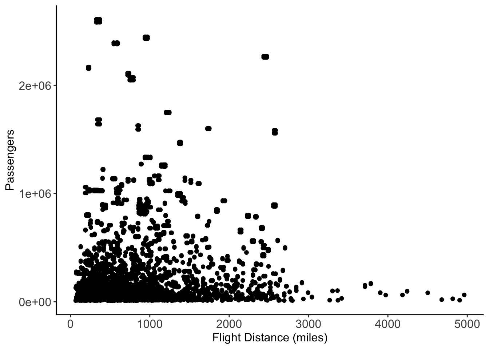
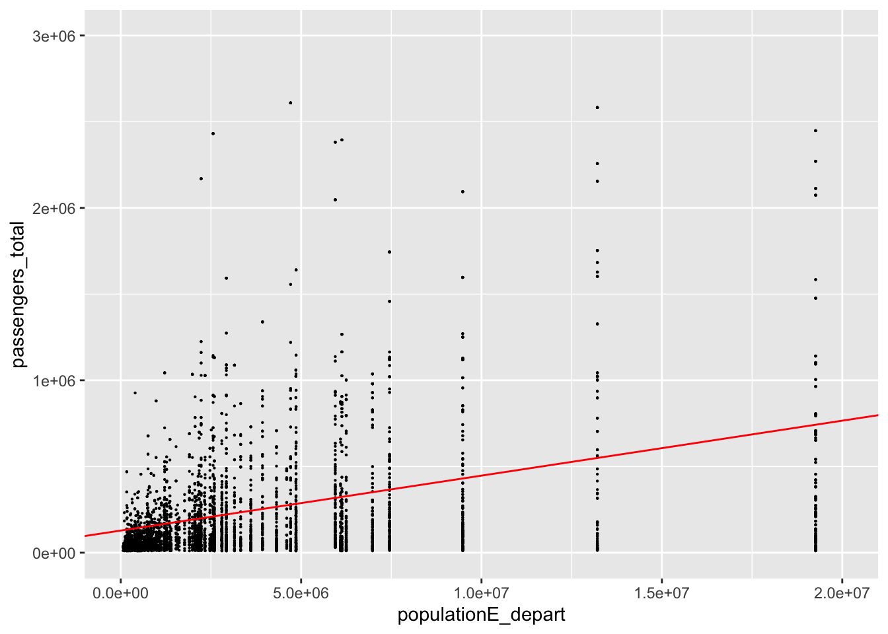

Reid Consulting Studio Report on the RDU Airline Market and Air Carolina Potential
Reid Consulting Studio’s analyst visualized data across geography and census populations to prepare a summary of flight patterns at national and RDU specific scales. We have also included a recommendation of use for preliminary flight paths for Air Carolina. Our findings indicate that certain flights are signifigantly more promising that others. Due to time constraints, this report covers only the necessitated population and fight distance metrics in our analysis, although the results of these analysis may indicate that mult-variable analysis of these gogether may not have the best correlatation with the data.
Our consulting firm highly values transparency and has included our representative’s coding work, should there be any questions on our methodologies.
#Loading our packageslibrary(tidyverse) #generally needed for functioning
── Attaching core tidyverse packages ──────────────────────── tidyverse 2.0.0 ──
✔ dplyr 1.1.4 ✔ readr 2.1.5
✔ forcats 1.0.0 ✔ stringr 1.5.1
✔ ggplot2 3.5.1 ✔ tibble 3.2.1
✔ lubridate 1.9.4 ✔ tidyr 1.3.1
✔ purrr 1.0.2
── Conflicts ────────────────────────────────────────── tidyverse_conflicts() ──
✖ dplyr::filter() masks stats::filter()
✖ dplyr::lag() masks stats::lag()
ℹ Use the conflicted package (<http://conflicted.r-lib.org/>) to force all conflicts to become errors
library(sf) #for any mapping that will be needed
Linking to GEOS 3.13.0, GDAL 3.8.5, PROJ 9.5.1; sf_use_s2() is TRUE
library(tidycensus)#census_api_key("96828ca56f0143ae6487c9bcad55244bb0e28959", install=T) #setting the keylibrary(dplyr) #for merging things laterlibrary(ggthemes) library(stringr)all_flights <-read_csv("/Users/celestereid/Documents/PLAN372/HW 4/airport_pairs.csv") #pulling in our data on flights
Rows: 9502 Columns: 10
── Column specification ────────────────────────────────────────────────────────
Delimiter: ","
chr (6): origin, dest, origin_name, origin_cbsa_name, dest_name, dest_cbsa_name
dbl (4): passengers, distancemiles, origin_cbsa, dest_cbsa
ℹ Use `spec()` to retrieve the full column specification for this data.
ℹ Specify the column types or set `show_col_types = FALSE` to quiet this message.
unique(all_flights$origin) #They all seem to be capitalized and airport misspellings seem unlikely with just 3 letters. so it makes me think we're unlikely to have strange duplicates that need to be adjusted.
Question 1: Market Saturation Analysis
#Now the goal is to identify which flights are either arriving or departing from RDU RDU_flights <- all_flights #I'm making a new object where I'm going to house just the data related to RDU RDU_flights <- RDU_flights %>%mutate( RDU_flights, arrival_dummy =ifelse(dest=="RDU",1,0), #Creating a dummy variable for flights arriving in RDUdeparture_dummy =ifelse(origin=="RDU",1,0)) %>%#And a dummy variable for flights departing RDUmutate(RDU_dummy = arrival_dummy + departure_dummy) #And then a dummy where 1 should mean a flight either departs or arrives at RDU, 0 should mean unrelated to RDU, and more than 1 shows an error of some sort because flights cannot both arrive and depart from RDUunique(RDU_flights$RDU_dummy) #The only outputs are 1s or 0s, which means there are no weird RDU to RDU flights that need to be filtered out. A quick look at the data confirms it looks like how I want it to#Now that we've identified the flights associated with RDU, we're going to filter it so that only the associated flights are present in our object RDU_flights <- RDU_flights %>%#indicates we're working with this objectfilter(RDU_dummy ==1) #filters to just the flights associated with RDU through our dummy#Then we're going to filter out anything with a value less than 10,000 for passengers on the flight. This to account for flights that do not actually have non-stop routes to RDU RDU_flights <- RDU_flights %>%#indicates we're working with this objectfilter(passengers >=10000) #filtering to just flights with over 10000 passengers
Air Carolina is predicted to operate primarily through direct flights in and out of the RDU airport. Thus, our representative visualized direct flights already operating out of RDU. The below table shows every flight that either originates or terminates at the RDU airport. The number of passengers who have flown on this route between October 2021 and September 2022 were also calcuated. Flight routes with under 10,000 passengers total were ommited due to concerns with human error and the possible inclusion of non-stop flights.
Our findings showed that the flight pattern with the most traffic was from RDU to ATL with 540190 passengers. Given our 10,000 passenger lower bound, the flight with the least traffic was from BUF to RDU with 11140 passengers over the 11 month period. Our firm reccomends that Air Carolina look into the demand metrics of these flight paths to see if any of them have much higher demand than supply, as indicated by high flight prices, sold out flights, etc. Outside of flight paths that meet those criteria, we reccomended Air Carolina consider flight paths with airports not yet serviced from RDU so that they are not in direct competition with already established brands.
#Then we're going to figure out how to display it as a tableRDU_table <-select(RDU_flights, origin, dest, passengers) %>%#getting rid of the data that isn't relevant for usrename(destination = dest) #making the names pretty for the tablemax(RDU_table$passengers)
[1] 540190
min(RDU_table$passengers)
[1] 11140
print(RDU_table, n=69) # displaying the object we filtered
#We're going to get some information from tinycensus#Pull the population, as well as the median income or one other relevant thingy and put it into an object#I used this source for help https://walker-data.com/tidycensus/articles/basic-usage.htmlvariableoptions <-load_variables(2020, "acs5", cache =TRUE) #finding variable options and IDs to importcensus <-get_acs(geography ="cbsa", #importing chosen variables for cbsa geography in 2020variables =c(population ="B01003_001",income ="B19013_001"),year =2020, survey="acs5",output="wide",geometry = T) #making sure it is spatial so we can join
Getting data from the 2016-2020 5-year ACS
Downloading feature geometry from the Census website. To cache shapefiles for use in future sessions, set `options(tigris_use_cache = TRUE)`.
census <-st_transform(census, 4269) #make it a spatial dataset with EPSG 4269 (north america)class(census) #it is spatial now#Join cbsa data to airport data twice - once on origin cbsa, once on departure cbsa (aka join orgin_pop to RDU_origin somehow)#this should be an XYZ MERGE THINGYcensus_origin <- census %>%#creating a dataset to represent the origin cbsa and renaming its columns so we can identify it once its joinedrename(GEOID_origin = GEOID,populationEorigin = populationE,origin_NAME = NAME,populationMorigin = populationM,incomeEorigin = incomeE,incomeMorigin = incomeM,geometryorigin = geometry )census_departure <- census %>%#creating a dataset to represent the departure cbsa and renaming its columns so we can identify it once its joinedrename(GEOID_depart = GEOID,populationE_depart = populationE,populationMdeaprt = populationM, deaprture_NAME = NAME,incomeE_depart = incomeE,incomeM_depart = incomeM,geometry_depart = geometry ) class(census_origin$GEOID_origin)class(all_flights$origin_cbsa) #the two columns we want to join on are not the same kind of column. So we're going to make GEOID a numeric variable. census_origin <- census_origin %>%#making GEOID origin numericmutate(GEOID_origin =as.numeric(GEOID_origin))census_departure <- census_departure %>%#making GEOID departure numericmutate(GEOID_depart =as.numeric(GEOID_depart))class(census_origin$GEOID_origin) # now its numericclass(census_departure$GEOID_depart) #same hereall_flights_withcensus <- all_flights %>%#joining the datasets togetherleft_join(census_origin, by=c( "origin_cbsa"="GEOID_origin")) %>%#for origin cbsaleft_join(census_departure, by=c("dest_cbsa"="GEOID_depart")) #for departure cbsa# find a way to make the datasets show cbsa to cbsa volumes using group_by and summarizeall_flights_cbsa <- all_flights_withcensus %>%#mocing the data to a new obhect so it can be manipulatedgroup_by(origin_NAME, deaprture_NAME) %>%#grouping by these variablessummarise( passengers =sum(passengers)) #summing the passengers based on the groupsof origin and departure cbsa in readable format
`summarise()` has grouped output by 'origin_NAME'. You can override using the
`.groups` argument.
#remove non-metropolitan airports #goal: extract the las two words off the origin name and departure name columns... filter for == Metro Areaall_flights_cbsa <- all_flights_cbsa %>%mutate( Metro_dummy =word(origin_NAME, -2), #uses stringr to identify the second to last word in both the origin to put into a new column. This should output either Metro or MicroMetro_dummy_dest =word(deaprture_NAME, -2)) #Does the same thing for the destination aspectunique(all_flights_cbsa$Metro_dummy) #both of these return Metro, Micro, and NA, and the NAs are where there are no names associated with the origin or dest place which aren't useful for us anywayunique(all_flights_cbsa$Metro_dummy_dest)all_flights_cbsa <- all_flights_cbsa %>%#filtering down to just the Metro placesfilter( Metro_dummy =="Metro") %>%#for origin placefilter(Metro_dummy_dest =="Metro") #and destination place#I'm also going to modify the all_flights_with_census to look more like our filtered data sets ( only metro locations )all_flights_withcensus <- all_flights_withcensus %>%#indicating where we're putting this and replicating the above processmutate( Metro_dummy =word(origin_NAME, -2), Metro_dummy_dest =word(deaprture_NAME, -2)) %>%filter( Metro_dummy =="Metro") %>%#filtering down to just the Metro placesfilter(Metro_dummy_dest =="Metro")#make scatterplots of origin population and total passengers, destination population and total passengers, and flight distance and total passengers. Describe trends. scatter_create_2 <- all_flights_withcensus %>%#if I try to use the summarized data I lose a lot of the things I need. So I'm creating a new object with all the variables... plus the passenger onefilter(passengers >=10000) %>%#we filtered RDU flights for this earlier but I want to do that here too group_by(origin_NAME, deaprture_NAME) %>%#replicating the volume by cbsa group variable creation we did earlier but using mutate to preserve the rest of my data, insteadmutate(passengers_total =sum(passengers)) #summing the total passengers going between the cbsa zones#there were some outliers in passenger totals so I removed them. scatter_create_2 <- scatter_create_2 %>%filter(passengers_total <4000000)
The three variables which Reid Consulting chose to investigate for the purpose of identifying potential airports to service were the population at the origin and termination location, as well as the distance of the flight. Here, we expanded our data to include airports beyond RDU. We did this to A) ensure a larger sample size off of which to make more accurate predictions later on and B) in the case that Air Carolina is succesful and wishes to expand their operations beyond the RDU homebase, this data will still be applicable.
To test the relationship between origin site population and total passengers on flights, we pulled census data for population and matched each airport to the metropolitan area which it served. It is important to note that due to the way population data was sourced, these metrics apply to the volume of passengers moving from geographic area to geographic area, not those moving from one specific airport to another. As Air Carolina is starting its company journey and targetting primarily metropolitan areas, we also filtered out any smaller locals.
#origin pop and passengersggplot(data =scatter_create_2, aes(x = populationEorigin, y = passengers_total))+geom_point()+#we're creating a scatterplot from the scatter_create object, focusing on the populationEogigin and passenger total variablestheme_classic()+xlab("Origin CBSA Population")+#making it pretty and giving it titlesylab("Passengers")+theme(axis.title =element_text(size=12),axis.text =element_text(size =12))
The first variable which we chose to investigate was the population at the site from which a flight was originating. Above, is a scatterplot of the relationship betwen origin population and the number of passengers who flew from area to area. There seems to be a slightly positive relationship between how many people lived in the origin city, and how many passengers took flights out of that city. In lower sections, a more formal trendline for this data is mapped.
#departure pop and passengersggplot(data =scatter_create_2, aes(x = populationE_depart, y = passengers_total))+geom_point()+#same as above but our x is destination populationtheme_classic()+xlab("Destination CBSA Population")+ylab("Passengers")+theme(axis.title =element_text(size=12),axis.text =element_text(size =12))
The second variable which we chose to investigate was the population at the site to which a flight was terminating Above, is a scatterplot of the relationship between a detination’s population and the number of passengers who flew to from area to area. There seems to be a slightly positive relationship between how many people lived in the destination city, and how many passengers took flights to of that city. In lower sections, a more formal trendline for this data is mapped.
#distance to passengers#there was an outlier so I removed it by filtering like so:ggplot(data =scatter_create_2, aes(x = distancemiles, y = passengers_total))+geom_point()+#same as above but our x is distancetheme_classic()+xlab("Flight Distance (miles)")+ylab("Passengers")+theme(axis.title =element_text(size=12),axis.text =element_text(size =12))

The final variable which we chose to investigate was the distance which any given flight was traveling. Above, is a scatterplot of the relationship between a flight distance and the number of passengers who flew to from area to area. Although at first glance, there seems to be a negative relationship between distance and how many passengers took flights to of that city, later trendline analysis call this into question. The difference between visible and calcluated trend is interesting here. Perhaps further distances are more exciting, and have fewer alternative transit options, incentivizing air travel. Perhaps we did not have enough density for fair flight paths and this skewed our data. Further research is advised for the relation of distance to passenger count, in particular.
Question 3:Passenger Volume Regression
Our representative created regression models for each of our variables of interest to evaluate the accuracy and reliablity of each of these variables. In addition to evaluating the regressions on numerical basis, each of these regressions were then mapped onto the previously generated scatterplots. They were then visually assesed to see if the trend line appeared to match the datapoints. If the trend line was signifigantly off from what appeared visually, in the graph it is possible that something else, such as outliers or uneven data distribution, could have skewed the reliability of our regression model.
#we're going to figure out scatter create and associated scatterplots and use that as the data for the regressions#we're going to do a regression for each first... and have them show us as a table which we will interpret all coefficients of except the constant/intercept#for origin pop vs. passengersorigin_model =lm(passengers_total~populationEorigin, scatter_create_2) #creates the regression where passengers is the y and origin pop is the xsummary(origin_model) #displays regression analysis statistics
Call:
lm(formula = passengers_total ~ populationEorigin, data = scatter_create_2)
Residuals:
Min 1Q Median 3Q Max
-728534 -168151 -95119 45856 2303944
Coefficients:
Estimate Std. Error t value Pr(>|t|)
(Intercept) 1.295e+05 7.604e+03 17.03 <2e-16 ***
populationEorigin 3.162e-02 1.219e-03 25.95 <2e-16 ***
---
Signif. codes: 0 '***' 0.001 '**' 0.01 '*' 0.05 '.' 0.1 ' ' 1
Residual standard error: 369500 on 4603 degrees of freedom
Multiple R-squared: 0.1276, Adjusted R-squared: 0.1274
F-statistic: 673.4 on 1 and 4603 DF, p-value: < 2.2e-16
The above information is a regression for the relation between the origin area’s population to passenger count between areas. The first value of interest here is the estimate for the populationEorigin. This value, 3.162e-02, is the slope of the regression model. Litterally, it means that for every one additional person who lives in the area around the origin airport, there will be, on average, 0.03162 people increase of passengers between areas over 11 months. We can’t actually have 0.03162 people, so another way to think about this is that for every 10,000 people in the city, there will be about a 316 person increase in passengers between areas for an 11 month time period. This is a slightly positive relaitonship, which makes sense. An area with more people will have more people to generate demand for flights, leading to more passengers on all flights.
The standard errors for both the intercept and slope of the line are relatively small compared to their estimated values, which indicate less uncertainty in our model. This is backed up by our t-values and p values. T avlues are generally considered acceptable if they are over 2. Both our intercept and slope t value exceed that by factors of 8 and 12 respectively, and indicate that the relationship between passenger count and origin population is meaningful. Likewise, p values smaller than 0.05 are considered good, and the p-values for the intercept and slope are both 0.00000000000000002, which is well within that threshold. The model is very statistically signifigant.
ggplot(data=scatter_create_2, aes( x = populationEorigin, y = passengers_total))+#plotting the origin population vs. the passenger countgeom_point(size=0.1) +geom_abline(intercept =1.295e+05, slope =3.162e-02, color ="red")+#fitting and displaying the regression line - this is based on numbers in the linear regressionxlim(0,20000000) +#bounds of the data/ fitylim(0, 3000000)
However, although the p-value, t-test, and standard error indicate a statistically signifigant relationship between origin population and passenger count, the R squared value is rather small. R squared values measure how well a model fits data, where values. closer to 1 are preffered. The R squared valueof 0.1274 to 0.1276 depending on adjustment, indicates that less than 13% of the “variance” of the model is explained by origin population. So, origin population, while having some effect, is likely not the only thing affecting passenger traffic between areas. nterpret all coefficients in the model (except the constant/intercept). This can also be seen visually in the graph above.
#for dest pop vs. passengersdest_model =lm(passengers_total~populationE_depart, scatter_create_2)#creates the regression where passengers is the y and dest pop is the xsummary(dest_model) #displays regression analysis statistics
Call:
lm(formula = passengers_total ~ populationE_depart, data = scatter_create_2)
Residuals:
Min 1Q Median 3Q Max
-731763 -168987 -94408 48276 2330543
Coefficients:
Estimate Std. Error t value Pr(>|t|)
(Intercept) 1.284e+05 7.599e+03 16.90 <2e-16 ***
populationE_depart 3.188e-02 1.219e-03 26.15 <2e-16 ***
---
Signif. codes: 0 '***' 0.001 '**' 0.01 '*' 0.05 '.' 0.1 ' ' 1
Residual standard error: 369100 on 4603 degrees of freedom
Multiple R-squared: 0.1294, Adjusted R-squared: 0.1292
F-statistic: 684 on 1 and 4603 DF, p-value: < 2.2e-16
Next, we calculated a similr regression for the population of the area around the destination. See the regression above. Again, the first value of interest here is the estimate for the slope, or relationship between our variables. This value, 3.188e-02 means that for every one additional person who lives in the area around the destination airport, there will be, on average, 0.03188 increase of passengers from any given other area. Again, we can’t actually have 0.03162 people, so another way to think about this is that for every 10,000 people in the city, there will be about a 319 person increase in passengers to that area for an 11 month time period. Like origin population, this is a slightly positive relaitonship, which makes sense. An area with more people may generate flight demand through people wanting to return home, or through increased attractions and amenities needed for larger populations.
Similar to the origin popultion, the standard errors for both the intercept and slope of the line are relatively small compared to their estimated values, which indicate low uncertainty in our model. Again, this is backed up by our t-values and p values. Both our intercept and slope t values of 16.99 and 26.15 exceed the statistically significant 2 manyfold. Likewise, our p values of 0.00000000000000002 are much smaller than 0.05. Standard error, p values, and t tests all indicate that the relationship between passenger count and origin population is meaningful. The model for destination population to passenger count is also very statistically signifigant.
ggplot(data=scatter_create_2, aes( x = populationE_depart, y = passengers_total))+#plotting the destination population vs. the passenger countgeom_point(size=0.1) +geom_abline(intercept =1.284e+05, slope =3.188e-02, color ="red")+#fitting and displaying the regression line - this is based on numbers in the linear regressionxlim(0,20000000) +#bounds of the data/ fitylim(0, 3000000)

Like the origin population model, although the p-value, t-test, and standard error indicate a statistically signifigant relationship between destination population and passenger count, the R squared value is still rather small. The R squared value of 0.1294 to 0.1292 depending on adjustment, still indicates that less than 13% of the “variance” of the model is explained by destination population. So, like origin population, while having some effect, the destination’s population is not the only thing affecting passenger traffic between areas. This can also be seen visually in spread of the data around the regression line in the scatterplot above.
#for distance vs. passengersdistance_model =lm(passengers_total~distancemiles, scatter_create_2)#creates the regression where passengers is the y and flight distance is the xsummary(distance_model) #displays regression analysis statistics
Call:
lm(formula = passengers_total ~ distancemiles, data = scatter_create_2)
Residuals:
Min 1Q Median 3Q Max
-367804 -215761 -151716 32547 2358176
Coefficients:
Estimate Std. Error t value Pr(>|t|)
(Intercept) 2.417e+05 9.871e+03 24.481 < 2e-16 ***
distancemiles 2.851e+01 8.893e+00 3.206 0.00136 **
---
Signif. codes: 0 '***' 0.001 '**' 0.01 '*' 0.05 '.' 0.1 ' ' 1
Residual standard error: 395200 on 4603 degrees of freedom
Multiple R-squared: 0.002228, Adjusted R-squared: 0.002011
F-statistic: 10.28 on 1 and 4603 DF, p-value: 0.001356
Our final variable of interest was the distance of flights. Unlike the population data, this regression refers specifically to routes between unique airports, as opposed to metropolitan geographies. Abov is the regression for the relation between flight distance and passenger count. Our slope here is, 2.851e+01 which means that for every additional mile a flight travels, there will be, on average, 29 more people who ride that flight every 11 months. Like our population based varibles this is a positive relaitonship. We can reason that this might be because longer distances have fewer alternate methods of travel, or incite more intrigue for a customer.
However, the model here is less reliable than the others for a few reasons. First, the R squared values of themodel is 0.002228 to 0.002011, meaning that less than 1% of the variance in the data was explained by this model. The fit of this model is bad mathematically, but we can also see it is a bad fit visually, in the scatterplot below.
ggplot(data=scatter_create_2, aes( x = distancemiles, y = passengers_total))+#plotting the flight distance vs. the passenger countgeom_point(size=0.1) +geom_abline(intercept =2.417e+05, slope =2.851e+01, color ="red")+#fitting and displaying the regression line - this is based on numbers in the linear regressionxlim(0,5000) +#bounds of the data/ fitylim(0, 3000000)
Additionally, although the regression is still very statistically significant, it is less so that the population based data. Although still significant, it only gets two stars compared to the three for the slope of origin and destination populations. Still, standard errors for both the intercept and slope of the line are relatively small compared to their estimated values. Our T values are both above 2, but again, the 3.206 t value for the relationship between flight distance and passenger count is closer to that threshold than the population data was. The p values are also still below 0.05 at 0.00000000000000002 and 0.00136 for the intercept and slope repectivly. Though not quite as good as the population based data, this model is statistically signifigant. Its real flaw is its poor fit to the data as demonstrated by its R squared value.
In conclusion, we found that the population of both the origin and destination of a flight, as well as the distance a flight travels have statistically signifigant correlations with passenger count. However, all of these models explain low to almost none of the variance of the models, by themselves. We can say it would likley be beneficial to choose airports with high surrounding popoulations for Air Carolina’s flight destinations, however the actual success of demand between these areas is still somewhat variable.
Question 4: Passenger Volume Prediction
#Find data for each of the predictions and compile it into a dataset#I am manually pulling the populationEorigin and populationE_depart and depart from the dataset #all of these are the from RDU side (RDU is origin) interested_flights =tribble(~populationEorigin, ~populationE_depart, ~distancemiles, #we're making an object with these variables in it. Below are the values for origin pop, destination pop, and distance for the flight routes indicated. Both to and from RDU are included1362997, 2472774 , 2363 , #RDU to PDX1362997, 841602 , 1606 , #RDU to ELP1362997, 384783 , 496 , #RDU to TLH1362997, 2338866 , 2345, #RDU to SMF2472774 , 1362997 , 2363, #PDX to RDU841602 , 1362997 , 1606, #ELP to RDU384783. , 1362997 , 496 , #TLH to RDU2338866 , 1362997 , 2345) #SMF to RDUfinal_model =lm(passengers_total~populationEorigin+populationE_depart+distancemiles, scatter_create_2) #creating a model/ multi-variable regression for the association between origing population, destination population, and flight distance to how many passengers will go on a flightsummary(final_model)
Call:
lm(formula = passengers_total ~ populationEorigin + populationE_depart +
distancemiles, data = scatter_create_2)
Residuals:
Min 1Q Median 3Q Max
-941189 -152469 -32544 69668 1984316
Coefficients:
Estimate Std. Error t value Pr(>|t|)
(Intercept) -7.824e+04 1.050e+04 -7.449 1.12e-13 ***
populationEorigin 4.104e-02 1.100e-03 37.322 < 2e-16 ***
populationE_depart 4.127e-02 1.101e-03 37.480 < 2e-16 ***
distancemiles -1.449e+01 7.334e+00 -1.976 0.0482 *
---
Signif. codes: 0 '***' 0.001 '**' 0.01 '*' 0.05 '.' 0.1 ' ' 1
Residual standard error: 323400 on 4601 degrees of freedom
Multiple R-squared: 0.332, Adjusted R-squared: 0.3316
F-statistic: 762.2 on 3 and 4601 DF, p-value: < 2.2e-16
Given that our selected variables did not explain high levels of variance by themselves, we aggregated them into a multi-variable regression to see if we could improve our R squared. The results of that aggregated regression are above. As you can see, our R square values did improve some, so that now about 33.2% of our data’s variance can be explained by this model.
When aggregated together, a one person increase in the origin area’s population corresponds with 0.004104 more passengers, a one person increase in the destination area’s population corresponds with 0.004127 more passengers, and a one mile increase in flight distance corresponds with a 14.49 person decrease in passengers over an 11 month period. Like in the single-model regressions, the origin and destination variables both have small standard error (0.00011 and 0.000101), as well as t values well over above 2 ( 37.322 and 37.480), and p values near 0 (0.00000000000000002). The population variables are still both very statistically signifigant in relation to the passenger count.
However, we run into more issues with our flight distance variable. First, the relationship between flight distance and passenger count has now reversed. Where it was a positive relationship before, it is now a negative relatinoship. While the standard error is still relaatively low, the t value and p value are both approaching the bounds of what is statistically signifigant. The t value is -1.976 which is very close to the absolute value fo 2, which is prefered. T values nearing 1.96 are often still accepted, so this barely makes the cutoff. Likewise the p value is 0.0482, which is very close to the 0.05 cut off of what a good p value is. So, between the variable relationship between flight distance and passenger count, as well as the slim margin by which this variable is still considered statistically signifigant, the distance variable more uncertain in its relation to passenger count.
But, because this model explained the most variance in our data, we used it for our final predictions.
#Now we are using our model to predict what the values in our interested flights will look like interested_flights$forecast_flight =predict (final_model, interested_flights)interested_flights
interested_flights <- interested_flights %>%#here I'm adding a variable to describe the flight path so I can understand my data better. mutate( flight_path =c("RDU to PDX", "RDU to ELP", "RDU to TLH", "RDU to SMF", "PDX to RDU", "ELP to RDU", "TLH to RDU", "SMF to RDU" )) %>%rename("Origin Population"= populationEorigin, #I'm also colmn tyding up names for their display"Destination Population"= populationE_depart, "Distance (Miles)"= distancemiles, "Forecasted Demand"= forecast_flight, "Flight Path"= flight_path)
#create a table with forecasted demand (displaying the datatable we created)flight_demand <-select(interested_flights, "Flight Path", "Forecasted Demand")flight_demand
# A tibble: 8 × 2
`Flight Path` `Forecasted Demand`
<chr> <dbl>
1 RDU to PDX 45515.
2 RDU to ELP -10839.
3 RDU to TLH -13609.
4 RDU to SMF 40249.
5 PDX to RDU 45257.
6 ELP to RDU -10718.
7 TLH to RDU -13381.
8 SMF to RDU 40022.
Our representative calculated the estimated number of passengers for a given flight from RDU to PDX, ELP, TLH, and SMF, and the reverse, back to RDU. The forecasted demand for each of these flights is listed above. As you can see, some of these values are highly unlikely. In fact, it is impossible to have negative passengers between locations. We beleive the variability of the flight distance variable, as well as the lower intercept in the multi-variable regression may have made the model more unpredictable. Likewise, with only R squared value corresponding with 33% of the variance accounted for our prediction will not be perfect. Our confidence in this model is quite low.
Still, we can still gain some insight from the predictions. Based on just flight distance and the populations of the cities between which a plane is flying alone, the flight we expect to be most popular and therefore viable for exploration via Air Carolina is the one from RDU to PDX, followed by the one from PDX to RDU. Thus, based on these models, our reccomendation would be for Air Carolina to invest in a flight service with PDX.